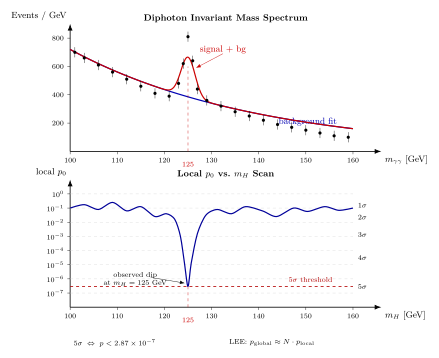

5σ 显著性 — 凭什么是 5 而不是 3?
2012 年 7 月 4 日, CERN 大礼堂里 ATLAS 发言人 Fabiola Gianotti 放出一张图: $m_{\gamma\gamma}$ 不变质量分布, 在 126 GeV 附近冒出一个小尖峰. 屏幕角落写 "local significance: 5.0σ". 台下鼓掌. 为什么是 "5.0"? 如果只有 4.0, 这个发布会就不存在 —— 即使小尖峰肉眼已经很明显. 这不是发言人偏好, 是整个高能物理社区 1990 年代末定下的规矩: discovery claim 必须 $\ge 5\sigma$. 3σ 叫 "evidence"(迹象), 4σ 叫 "observation"(观测), 只有 5σ 才能叫 "discovery"(发现).
这条规矩从外部看很奇怪. 如果 "信号高于背景 5 个标准差" 意味着 "在纯背景假设下出现这个高度的概率是 350 万分之一", 那 3 个标准差 (1 in 740) 已经够罕见. 为什么多花 2 个 sigma? 答案不在统计教科书里 —— 在 50 年发错的历史里. 从 1970 年代到 2010 年代, 粒子物理学家至少十几次在 3–4σ 看到"新现象", 有的上了新闻头条, 几年后全部消失. 每次消失后大家反思: 为什么单次测量的 p-value 看起来很小, 实际再做一遍就没了? 原因就是下面要讲的 look-elsewhere effect —— 这个名字 1970 年代在实验组内部流传, 到 2010 年才有人 (Gross & Vitells) 写成数学定理. 我们这一节就把这条"经验规矩"推成一条可算的公式.
一、从 p-value 到 σ: 正态分布的硬换算
先把 "$n\sigma$" 和 p-value 的对应关系写清楚. 在零假设 $H_0$ (纯背景, 无信号) 下, 某个检验统计量 $T$ 渐近服从标准正态分布. 观察到 $T = n$ 且做单边检验 (因为我们只关心 "超出背景", 不关心 "低于背景"), 对应 p-value 是正态上尾概率
\begin{equation} p(n) = \int_n^\infty \frac{1}{\sqrt{2\pi}}e^{-x^2/2}\,dx = \tfrac12\,\mathrm{erfc}(n/\sqrt2). \end{equation}代入 $n = 1, 2, 3, 4, 5$ 得到一张实验物理学家要背的表:
- $1\sigma$: $p \approx 0.1587$, 约 1 in 6.3
- $2\sigma$: $p \approx 0.0228$, 约 1 in 44
- $3\sigma$: $p \approx 1.35\times 10^{-3}$, 约 1 in 740
- $4\sigma$: $p \approx 3.17\times 10^{-5}$, 约 1 in 31 500
- $5\sigma$: $p \approx 2.87\times 10^{-7}$, 约 1 in 3.5 million
从 $3\sigma$ 走到 $5\sigma$, p-value 小了五千倍. 这不是线性尺度上的小步, 是 log 尺度上从 $10^{-3}$ 跳到 $10^{-7}$. 粒子物理选这个门槛的代价是: 探测器要取够的积分亮度, 让每个 bin 的事件数上到 $O(10^6)$, 这样 Poisson 涨落 $\sigma = \sqrt N$ 才能让 $5\sigma$ 偏离 ($5\sqrt N$ 个额外事件) 显现得出来.
另一个数字直觉: Higgs 在 $m_{\gamma\gamma} = 125$ GeV 处的局部信号强度, ATLAS 2012 年 7 月报的是 $5.0\sigma$, 对应 local p-value $\sim 3\times 10^{-7}$; 到 2012 年底数据翻倍后局部显著性升到 $\sim 7\sigma$, p-value $\sim 10^{-12}$, 那时候连 LEE 都打不回原形. CMS 同时报 $4.9\sigma$ (局部). 两个独立合作几乎同时达到阈值, 多通道联合拟合 ($H\to\gamma\gamma$, $H\to ZZ^* \to 4\ell$, $H\to WW^*$) 各自达到 3–4σ —— 独立信号一致指向 125 GeV, 这是 "两道以上独立通道各自显著 + 两个合作组各自显著" 的理想情况. 才敢叫发现.
二、Cliché 严格 deepdive: look-elsewhere effect 的 trial factor 公式
这一节要把 look-elsewhere effect 推到能用. 它是粒子物理统计里被反复引用却很少被认真写的 cliché 概念, 不推清楚就只能靠 "凭感觉".
场景设定. 实验测到一条不变质量谱 $m$, 从 $m_{\min}$ 到 $m_{\max}$ (比如 ATLAS $H\to\gamma\gamma$ 的 110–150 GeV). 实验者事先不知道 Higgs 在 125 GeV; 他们让 mass 假设 $m_H$ 在整个区间里扫, 每个试验值做一次信号拟合, 得到一个 local p-value $p_{\rm local}(m_H)$. 在扫描结果里, 某个 $m_H$ 值给出最小的 $p_{\rm local}$, 称为 $p_{\min}$. 问题是: 这个 $p_{\min}$ 在零假设下本身就有涨落. 如果扫了 $N$ 个独立位置, 其中至少有一个给出极小 p-value 的概率, 比单次试验高得多.
第 1 步: $N$ 个独立试验. 假设 $N$ 个 mass 假设给出 $N$ 个独立的 local p-value $p_1, p_2, \ldots, p_N$. 在零假设下每个 $p_i$ 均匀分布于 $[0,1]$. 单次试验中 "$p_i \le p$" 的概率是 $p$; "$p_i > p$" 的概率是 $1 - p$; $N$ 次试验中 "所有 $p_i > p$" 的概率是 $(1-p)^N$ (独立性). 因此 "至少有一个 $p_i \le p$" 的概率, 也就是 global p-value, 是
\begin{equation} p_{\rm global}(p) = 1 - (1 - p)^N. \end{equation}当 $p \ll 1/N$ 时, 用 $\ln(1-p) \approx -p$ 展开, $(1-p)^N \approx 1 - Np$, 于是
$$p_{\rm global} \approx N p_{\rm local}, \qquad N p_{\rm local} \ll 1.$$这个因子 $N$ 就是 trial factor. 物理上它说: "在 $N$ 个位置上找信号, 任一位置涨落超出 $n\sigma$ 的概率, 是单点的 $N$ 倍." 本质就是多重假设检验的 Bonferroni 不等式.
第 2 步: 独立 bin 数 $N$ 怎么数? 实际扫描时相邻 mass 点不完全独立 —— 探测器分辨率 $\sigma_m$ 决定信号 bump 的宽度, 距离小于 $\sigma_m$ 的两个拟合点检验统计量高度相关, 算作 "半个独立试验". 粗略估计
$$N_{\rm trials} \sim \frac{m_{\max} - m_{\min}}{\sigma_m}.$$在 $H\to\gamma\gamma$ 分析里, ATLAS 的 $\gamma\gamma$ 质量分辨率 $\sigma_m \sim 1.5$ GeV, 扫描区间 $\Delta m = 40$ GeV (110–150 GeV), 估 $N \approx 40/1.5 \approx 27$. 实际 ATLAS 的计算用了一条更精细的渐近公式 (Gross-Vitells 2010) 得 $N \approx 80\text{--}100$, 因为他们不仅扫 mass, 还把信号宽度 $\Gamma$ 当额外自由度.
第 3 步: Gross-Vitells 上界. 当 $p_{\rm local}$ 已经很小, 渐近公式把 trial factor 从简单的 $N$ 换成一条依赖检验统计量阈值 $u$ 的上界
$$p_{\rm global}(u) \le p_{\rm local}(u) + \langle N(u_0)\rangle\cdot P(\chi_1^2 > u)/P(\chi_1^2 > u_0),$$其中 $\langle N(u_0)\rangle$ 是检验统计量的扫描轨迹在阈值 $u_0$ 处的期望"上穿次数". 实际做法 pragmatic: 跑 MC toy experiment, 在每次 toy 里重做一遍 mass 扫描, 记最大局部显著性, 直接估 $p_{\rm global}$. ATLAS 和 CMS 都跑 $10^5$ 到 $10^6$ 次 toy. 但这里我们只用 $p_{\rm global} \approx N p_{\rm local}$ 的简单版本就够量级估计.
第 4 步: 代入数字. 假设 $N_{\rm trials} = 100$. 一个 local 显著性为 $n_{\rm local}$ 的点, 对应 local p-value $p_{\rm local}$; global p-value $\approx 100\, p_{\rm local}$; global 显著性 $n_{\rm global}$ 定义为同样的单边正态上尾 ($n_{\rm global}$ 使得 $p(n_{\rm global}) = p_{\rm global}$). 算一下:
- local $3\sigma$ ($p_{\rm local} = 1.35\times 10^{-3}$) → global $p = 0.135$ → global $n \approx 1.1\sigma$. 几乎不值一提.
- local $4\sigma$ ($p_{\rm local} = 3.17\times 10^{-5}$) → global $p = 3.17\times 10^{-3}$ → global $n \approx 2.7\sigma$. 仍然不够.
- local $5\sigma$ ($p_{\rm local} = 2.87\times 10^{-7}$) → global $p = 2.87\times 10^{-5}$ → global $n \approx 4.03\sigma$. 足以引起重视.
- local $6\sigma$ ($p_{\rm local} = 9.87\times 10^{-10}$) → global $p = 9.87\times 10^{-8}$ → global $n \approx 5.2\sigma$. 真正的发现.
Trial factor $N = 100$ 下, local $5\sigma$ 被"扣"到 global $\sim 4\sigma$. 如果实验组还把 $m_{\min}$ 扩到 70 GeV 甚至 50 GeV (比如以前做 $Z'$ 搜寻), $N$ 涨到 $\sim 1000$, local $5\sigma$ 的 global 显著性继续降到 $\sim 3.5\sigma$. 这时候 local $5\sigma$ 就只是"evidence" 级别. 反过来说, 只有 local $\gtrsim 5\sigma$ 才能在最坏 ($N \sim 10^3$) 的 trial 侵蚀下仍留在 "$\ge 4\sigma$ global" 的安全区. 这就是为什么粒子物理社区把阈值定在 5 而不是 3.
极限检验. 考虑 $N \to \infty$ 的极限. 假如扫描无穷多个 mass 假设, 任何固定的 local $p_{\rm local} > 0$ 对应 $p_{\rm global} = 1 - (1-p_{\rm local})^N \to 1$. 也就是说无论 local 显著性多少 σ, 扫得足够宽, 你总能找到某处"像信号". 现实当然不会扫到无穷: 能标上限受碰撞能量限制, 分辨率下限受探测器限制, $N$ 有上界. 但这个极限的寓意很硬: 没有预注册的 mass 假设, 任何 local significance 都可被 LEE 吃掉. 这也是为什么中微子实验 DayaBay、KamLAND 偏爱预先写死的参数空间 (事先由理论给出 $\theta_{13}$ 在某个范围), 再去做显著性检验 —— 把 $N$ 压到 1, 让 local = global.

三、历史教训: 当 3–4σ 信号消失
如果读者还觉得 $5\sigma$ 是"过分保守", 下面三个案例值得一看.
案例 1: LEP 的 Higgs "迹象" (2000 年 秋). LEP (大型正负电子对撞机) 在 2000 年最后几个月, 把质心能量推到 $\sqrt s = 206$ GeV —— 这是机器物理极限, 再高就没法运行. ALEPH 合作组看到 $e^+e^-\to Zh$ 过程在 $m_h \approx 115$ GeV 附近有几个事件, 超出预期背景; 合在 L3, OPAL, DELPHI 的数据后 local 显著性约 $2.9\sigma$. 实验组写信给 CERN 管理层, 请求再多跑 $30\text{--}40$ pb$^{-1}$ 看信号是否凝固. CERN 为了不推迟 LHC 建设工期, 拒绝延长. 实验组最终发了一篇"上限"论文: $m_h > 114.4$ GeV at 95% CL. 那个 $2.9\sigma$ local 的 bump —— 如果应用 LEE trial factor $N \sim 100$ (他们扫了 Higgs 质量 80–115 GeV) —— global 显著性 $< 1\sigma$, 属于随机涨落. 之后 Tevatron、LHC 都没在 115 GeV 看到任何东西, 2012 年确认的 Higgs 在 125 GeV. LEP 的 2.9σ 是统计假象, 幸亏当年 LEP 没硬说发现.
案例 2: 750 GeV diphoton excess (2015 年 12 月). LHC Run 2 刚开 $\sqrt s = 13$ TeV, ATLAS 和 CMS 在 2015 年 12 月 15 日联合发布会上展示 $m_{\gamma\gamma}$ 分布的初步数据. 在 750 GeV 附近两个合作组各看到一个 bump: ATLAS local $3.9\sigma$ (含宽 $\Gamma \sim 45$ GeV 的假设), CMS local $2.6\sigma$. 两个实验独立看到! 消息传开, 到 2016 年春天, arXiv 上出现了 500 多篇理论论文, 给出各种可能解释: 新的标量粒子、technicolor bound state、额外维的 Kaluza-Klein 激发、复合 Higgs 伴子等等. 但 2016 年 8 月 ICHEP 会议上, ATLAS 和 CMS 用全年新数据 (比 2015 年多 5 倍亮度) 重新拟合: 750 GeV 处 bump 完全消失, local 显著性降到 $< 1\sigma$. 500 篇理论论文作废. 教训: ATLAS 的 local $3.9\sigma$ 在应用 LEE trial factor (扫描 500 GeV 到 2 TeV, $\sigma_m \sim 30$ GeV, $N \sim 50$, 另还扫宽度) 之后, global 显著性大约 $2\sigma$ —— 纯随机, 不值得信. 但 "两个实验都看到" 的心理暗示让社区一度忘了 trial factor.
案例 3: Higgs 2012 为什么可信. 对比下: 2012 年 7 月 4 日的 Higgs 宣告, ATLAS 报 local $5.0\sigma$ @ 126.5 GeV, 扣 LEE 之后 global $\approx 4.1\sigma$; CMS 报 local $4.9\sigma$ @ 125.3 GeV, 扣 LEE 后 global $\approx 3.8\sigma$. 单看每家都恰到 "发现" 门槛. 但两家实验独立, 联合显著性近似 $\sqrt{5.0^2 + 4.9^2} = 7.0\sigma$ (假设独立). 而且两家的峰位在 $1$ GeV 内重合, ATLAS 和 CMS 的各自多通道 ($\gamma\gamma$, $ZZ^*$, $WW^*$) 也独立显著. 这才是 2012 发现的结构: 两组独立合作 $\times$ 多个独立衰变道 $\times$ 一致 mass $\approx$ trial factor 退居次要. 而 750 GeV 的 2015 案例满足了"两组独立看到"但缺少多衰变道相互印证, 最终被 LEE 打回.
四、为什么 "5" 是历史均衡点, 不是自然常数
数字 "5" 其实不是一条硬的物理定律, 而是一条经验均衡:
考虑 1: 典型 trial factor. LHC 一次 Run 能做多少独立 mass 扫描? 按 ATLAS / CMS 2010 年代的系统来估: 每个实验每年发 $\sim 100$ 篇搜寻论文, 每篇扫 1–2 个参数, 分辨率决定 $N \sim 10\text{--}100$; 总 trial factor 量级 $10^3\text{--}10^4$. local $5\sigma$ ($p = 3\times 10^{-7}$) 扣完 trial 还是 $p_{\rm global} \sim 10^{-3}\text{--}10^{-4}$, 即 global $3\text{--}3.5\sigma$ —— 仍然显著, 但不 overwhelming. Local $3\sigma$ 扣完 trial 就是 "扫了 1000 位置, 总有一个 $p < 10^{-3}$", 完全不奇怪. 所以 "5" 是考虑了全实验所有搜寻加起来的总 trial factor 之后, 仍然可以 survive 的最低门槛.
考虑 2: 系统误差. 除了统计涨落, 实验有系统误差 —— 背景形状拟合的选择 (多项式 2 阶还是 3 阶?)、能标刻度 (探测器能量测量 $\pm 0.5\%$ 的 bias)、luminosity 归一化 ($\pm 2\%$). 这些通常在 local 显著性计算里以 "nuisance parameter" 的形式 profile 出来, 但总有残余. 经验上, 很难把系统误差压到单位 $\sigma$ 以下 —— 如果一个 $3\sigma$ signal 有 $1\sigma$ 的系统不确定性, 真实 significance 可能只有 $2\sigma$. 把门槛设到 $5\sigma$, 系统侵蚀后还有 $\ge 4\sigma$, 安全.
考虑 3: 事后假设 (post-hoc). 最阴险的 LEE 变体是 "post-hoc". 实验者看到数据有个 bump, 然后量身定制一套选区 cut 让 bump 更显著. 这相当于 trial factor $N = \infty$ 量级的问题. 应对办法是 "blinding": 数据分析在不看信号区的条件下 finalize 所有选择, 然后 "揭开" 信号区一次, 只算一次 local p. 这个习惯从 1990 年代 BaBar、Belle 的 $CP$ violation 分析开始成为标准, LHC 2012 年后全面采用. Blinding 能把 trial factor 压到预注册的 $N$, 但不能降到 1.
考虑 4: 为什么不是 $6\sigma$ 或 $4\sigma$? 选 4 太低, LEE 扣完剩 $3\sigma$, 上述历史案例都会被误判. 选 6 太高, 像 Higgs 2012 这样的刚好 $5\sigma$ 发现就得等亮度翻 3–5 倍再发 —— 社会成本 (延误 2–3 年的新闻周期、后续验证测量资源分配、理论界工作被卡住) 也很大. "5" 刚好在 "错发概率 $< 10^{-3}$ (扣 trial 后)" 与 "等待成本可接受" 之间取平衡. 核物理和天体物理的标准有时还用 $3\sigma$ 或 $5\sigma$, 要看该领域的 trial 量级与系统误差; 没有一个普世的数字.
历史: LEP → LHC. 1995 年 Tevatron 发现顶夸克 $t$, CDF 报 $4.8\sigma$, D0 报 $3.6\sigma$, 两组独立, 顶 mass 由理论窗口 ($m_W$ 与精密电弱拟合) 预先限定在 $\sim 170\pm 10$ GeV —— 相当于 trial factor 极小. 社区当时可以接受 CDF 的 $4.8\sigma$ 发表 "discovery". 1998 年 Super-Kamiokande 发现大气中微子振荡, 显著性报 $6.2\sigma$, 也无异议. 2000 年 LEP-Higgs 那次 $2.9\sigma$ 就不敢叫发现. 到 2010 年 LHC 启动, PDG 与国际实验委员会 (LHCC) 正式把 "discovery $\ge 5\sigma$ after LEE" 写入内部审稿标准. 2012 年 Higgs 发布在这条标准下走过全套程序 —— 这是近代最严格的一次. 2015 年 750 GeV diphoton 闹剧再次确认: 没到 $5\sigma$ global 就别叫发现. 2022 年 CDF 报 $W$ 质量 "$7\sigma$ 偏离" 标准模型预测, 虽然 $\sigma$ 数够高, 但由于是一次测量中的系统差异 (非扫描信号), 社区仍然要求其它实验独立复现 —— 到现在还没有结论.
小结
本节从一条经验规矩出发 —— 高能物理的"发现"门槛 $\ge 5\sigma$ 对应 p-value $\le 2.87\times 10^{-7}$ (1 in 3.5 million) —— 问它为什么是 5 而不是 3. 核心答案是 look-elsewhere effect: 在 $N$ 个独立 mass 假设上扫描, 全局 $p_{\rm global} = 1 - (1 - p_{\rm local})^N \approx N p_{\rm local}$, trial factor $N \sim 10$–$10^3$ 把 local 显著性系统性抬高. 推导完 trial factor 公式再代数字: $N = 100$ 时, local $3\sigma$ 缩水到 global $1.1\sigma$, local $4\sigma$ 到 $2.7\sigma$, 只有 local $5\sigma$ 缩到 global $\approx 4\sigma$ 才留在"值得相信"的区域. 历史两条教训强化这个结论: LEP 2000 的 115 GeV Higgs $2.9\sigma$ 被 LEE 打回, 2015 LHC 的 750 GeV diphoton $3.9\sigma$ 在一年数据后消失; 而 2012 Higgs 的 ATLAS $5.0\sigma$ + CMS $4.9\sigma$ 双独立实验 + 多衰变道印证才成为近代最稳的发现. "5" 这个数字不是物理常数, 而是 50 年实验失败史加上典型 trial factor $\sim 10^3$ 的均衡点. 下一节我们要离开这个干净的对撞机世界, 去问一个 LEE 根本用不上的问题: 当信号本身是个 "non-detection" (地下探测器几年没看到暗物质), 我们怎么把这个零信号变成参数限制 —— 这是另一套统计哲学.
▲